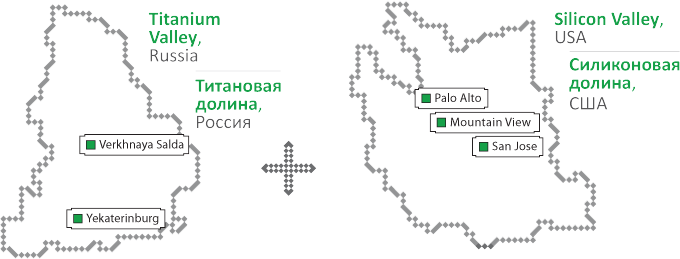

Valley to Valley, is a collaboration of artists, art historians, and social scientists exploring the similarities and differences between the sister cities San Jose, California and Yekaterinburg, Russia. San Jose is located in the heart of Silicon Valley, which is world renown for innovation and technology. On the contrary, Titanium Valley is a technological area scheduled to break ground near Yekaterinburg.
Silicon Valley is located in the southern part of the San Francisco Bay Area in California. Formerly the Valley of Hearts Delight, which was known primarily for agriculture and orchards. The area originally supplied the majority of produce and fruit to the surrounding area. Now the Valley is a global hub for innovative and cutting-edge technology.

Titanium Valley is the prospective home for large-scale industry project funded by the Russian government. Located near Salda in the URAL Federal District of Russia, the impending project aims to build up the regions economy by creating globally competitive products based around the high concentration of titanium in the Ukraine.
V2V is a research-based project aiming to align the similarities and differences between Silicon Valley and the prospective Titanium Valley. The project was shown at Innoprom 2012 and will be shown at both Zero1 Biennial in San Jose, California and the 2nd Ural Industrial Biennial of Contemporary Art in Yekaterinburg, Russia.